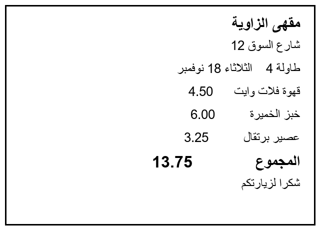

Draft translation: please check it with a native speaker before release.
Esta página es parte de la demostración de OCR. Estado: etapa posterior.
El texto de derecha a izquierda se conserva en el orden en que se escribe. Aquí se muestra un recibo en árabe: sus precios se leen bien, pero las palabras en árabe todavía no las lee el reconocedor del MVP.

Las líneas impresas en árabe se pueden encontrar con la búsqueda. La nota escrita a mano todavía no se lee.